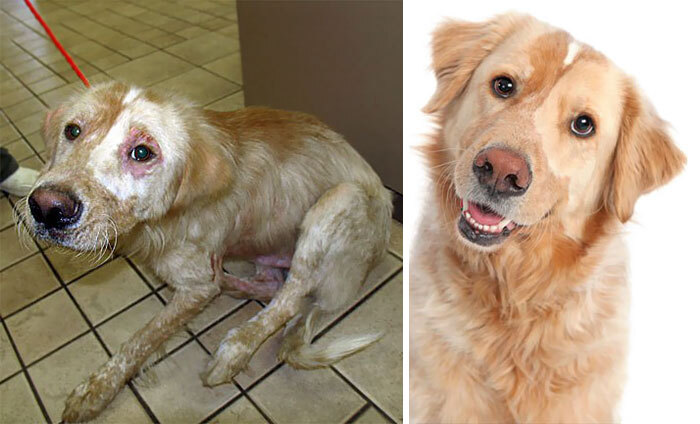

Animal abuse is when people mistreat animals. Some ways that animals are mistreated are by hitting them and testing products on them.
Most animals are abused like horses, dogs, and cats. They are most often reported to a animila care.
And also animals are abused by cruetly encompasses a range of behavior harmful to animals.also all animals cruently is a concern because it is wrong to inflict suffering on any living creature. and animal abuse should be reported because when people mistreat animals that is not right because animals really suffer through the pain.
Aswell as some are approximately 1 million pet dogs and 74.1 million pet cats in the U.S are abused
And also when people train dogs if they dont do the correct thing the people/ trainers hit them mostly with a stick. and also Thousands of Greyhounds is a type of pet that many dogs do not make it to the nominal retirement age 4 or 5.
Alot of people that abuse animals use whatever they can find like sticks. and also even a wood medal stick that is sharp.
what people also use is a wood ball that people can hit them with a ball
But what people mostly use is metal and wood stuff that is sharp so they can mistreat the animnals.
And also it's been 900 to 2,000 new cases of animal abuse.
